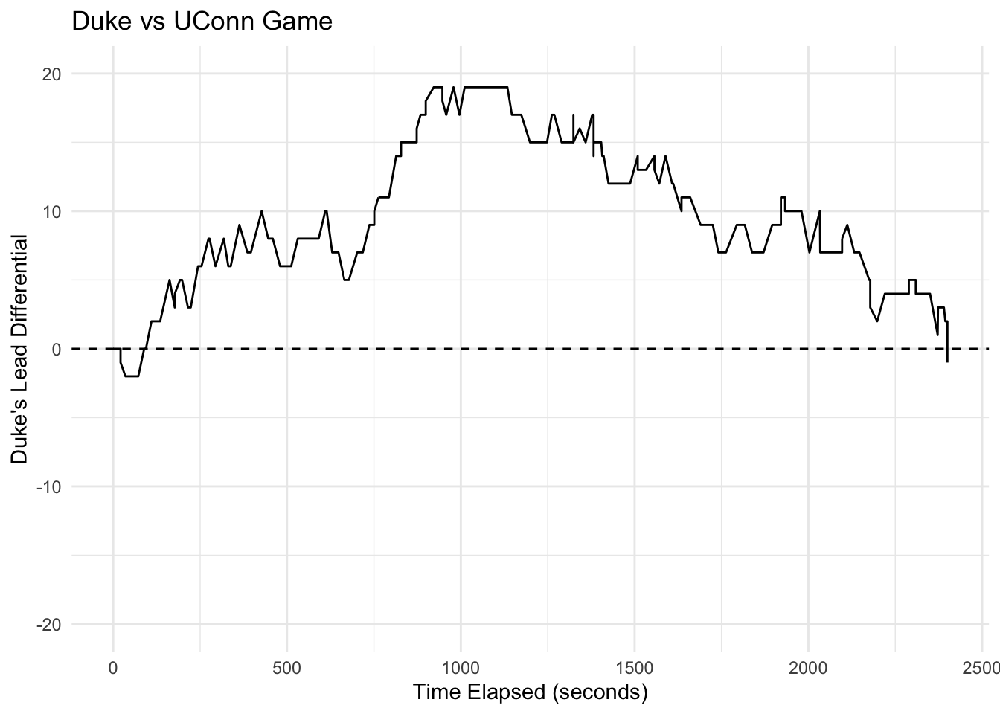

Introduction
Post 1
This project was motivated by the question:
How can in-game win probability be estimated and visualized throughout NCAA men’s basketball games to support data-driven storytelling?
The idea emerged from an interest in combining data science and sports, particularly within the context of college basketball. Two research papers provided the foundation for the project. The first, Bayesian Estimation of In-Game Home Team Win Probability for College Basketball, introduced Bayesian approaches that update win probability as a game progresses using information such as score differential and time remaining. The second, A Bayesian Logistic Regression Framework for In-Game Win Probability Estimation in NCAA Basketball, demonstrated how Bayesian logistic regression can be used to estimate real-time win probabilities while incorporating additional game and team-level information.
Together, these papers provided a framework for thinking about how win probability evolves throughout a game. Building on these ideas, the goal of this project was to develop and visualize in-game win probability models using NCAA men’s basketball play-by-play data.
Data Collection
After reviewing the research papers, the first objective was to obtain a comprehensive dataset of NCAA men’s basketball play-by-play data. The hoopR package provided an accessible solution through the load_mbb_pbp() function, which retrieves play-by-play data sourced from ESPN.
Initially, data from every available season (2002–2026) was considered. However, the full dataset exceeded the memory limitations of my computer. As a result, the project was narrowed to the 2025 and 2026 seasons, which provided a sufficiently large sample while remaining computationally manageable.
The raw play-by-play dataset contains nearly three million rows and 57 variables per season. Each row represents a single game event, such as a made basket, rebound, turnover, foul, or timeout. The data are organized chronologically within each game, allowing the complete sequence of events to be reconstructed from the opening tip to the final buzzer.
Initial Data Exploration
The first stage of exploration focused on understanding the variables and identifying which information would be useful for predicting in-game win probability. Since the dataset did not contain a win probability variable, the necessary predictors would need to be derived from the play-by-play data.
An initial review of the 2026 season revealed 6,275 unique games. The dataset included contests involving both NCAA division one and non-division one programs, reflecting the common practice of division one teams scheduling non-conference games against smaller schools early in the season.
To better understand the structure of the data, individual games were examined in detail. One example was Duke’s NCAA Tournament matchup against UConn, a game in which Duke built a substantial early lead before UConn completed a 19-point comeback. Visualizing score differential throughout the game provided an early illustration of how game states change over time and how those changes might influence win probability estimates.
The dataset was also inspected for potential scraping or recording issues. Games were sorted by the number of recorded events, revealing a range from 287 to 833 events. Investigation showed that these irregularities originated from ESPN’s source data rather than from the hoopR package itself. In one case, incomplete play-by-play information resulted in an unusually low event count, while another game contained duplicated events that inflated the total number of recorded events. Although a small number of games contained imperfections, the overall quality of the dataset was sufficient for modeling purposes.
Data Summary
After gaining familiarity with the raw data, a basic summary was created to better understand the scope of the 2026 season.
# A tibble: 1 × 3
total_games total_playoff_games total_teams
<int> <int> <int>
1 6275 105 366The 2026 dataset contains 6,275 games, including 105 postseason games. These postseason contests extend beyond the NCAA Tournament and include additional tournaments involving teams that did not qualify for March Madness.
The dataset also contains 366 unique home teams and 720 unique away teams. Since there were 365 NCAA division one men’s basketball programs during the 2026 season, these counts confirm the presence of non-division one opponents within the data. This observation is consistent with typical scheduling patterns, where division one programs frequently play exhibition or early-season games against smaller schools.
Data Wrangling
Once the structure of the dataset was understood, the next step was to create variables that could be used for win probability modeling. The two foundational variables were time_elapsed and lead_diff.
\(time\_elapsed = 2400 - end\_game\_seconds\_remaining\)
\(lead\_diff = home\_score - away\_score\)
The time_elapsed variable measures the number of seconds that have elapsed since the start of regulation, while lead_diff represents the home team’s score differential. Positive values indicate a home team lead, while negative values indicate an away team lead.
A binary response variable, home_win, was also created, where a value of 1 indicates a home team victory and a value of 0 indicates an away team victory. During this process, a small issue was identified in which the final observation of some games produced a missing value for time_elapsed. This was corrected during preprocessing.
The raw play-by-play structure records observations only when an event occurs. For example, the time_elapsed values for a game might appear as 0, 14, 17, and 35 seconds. To support modeling, the data were transformed so that every game contained one observation per second. Duplicate events occurring at the same timestamp were removed, and the game state was carried forward between recorded events. After this transformation, every regulation game contained exactly 2401 observations, corresponding to each second from the opening tip through the end of regulation.
Adding Team Ratings
Several of the models developed later in the project incorporated a measure of relative team strength. To capture this information, a variable named rating_diff was created using team ratings obtained from TeamRankings.
These ratings provide a single numerical measure of overall team strength that were updated throughout the season. Because ratings change daily, historical ratings were collected for every date in the season, producing a dataset containing team ratings across time.
Integrating these ratings into the play-by-play data introduced a common data wrangling challenge of inconsistent team names across sources. ESPN and TeamRankings use different names for certain schools, including abbreviations and alternate spellings. The fuzzyjoin package was used to resolve many of these mismatched names automatically, while the remaining mismatches were corrected manually.
An additional complication was that TeamRankings only provides ratings for NCAA division one programs. For non-division one opponents, ratings were assigned as one point below the lowest available division one rating. Once team names were standardized, the ratings dataset was merged with the main play-by-play dataset. Which added the variables home_rating, away_rating, and the new predictor rating_diff.
The Final Dataset
The final modeling dataset was created using the 2025 season, which served as the training data for all subsequent models. The 2026 season was reserved for evaluating model performance and generating win probability visualizations for individual games.
Following preprocessing, the dataset contained approximately 14.7 million observations, with each row representing a single second of a game. Three predictor variables were used throughout the project:
time_elapsed: the number of seconds elapsed in regulation (0–2400)lead_diff: the home team’s score differentialrating_diff: the difference between the home and away team ratings (home - away)
The response variable, home_win, indicates whether the home team won the game.
This transformed dataset provided a consistent representation of game state at every second of every game, forming the foundation for the win probability models developed in later stages of the project.
Conclusion
This first stage of the project focused on obtaining, understanding, and preparing NCAA men’s basketball play-by-play data for modeling. Through exploratory analysis and data wrangling, the raw event-level data were transformed into a second-by-second representation of game state, while team strength information was incorporated through external ratings data.
With a clean and structured dataset in place, the next step was to investigate statistical approaches for estimating in-game win probability. The following post introduces both Frequentist and Bayesian logistic regression models, providing the first framework for translating game state variables into estimates of the home team’s probability of winning.